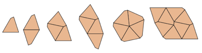
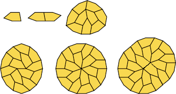

(Ed Pegg)

(Yinji Wu)

(Joe DeVincentis)

(Mike Reid)

Yoshiaki Araki

(George Sicherman)

(George Sicherman)

(Mike Reid)

(George Sicherman)
The spectrum of a square or triangle is {1,2,3,4, . . . }. The spectrum of a circle is {1}. This month's problem is "Which sets of positive integers are the spectrum of some shape?"
Let N={1,2,3,4, . . . }. Connecting the center of an equilateral triangle or square to its vertices by curved but symmetric lines gives shapes with spectra 2N, 3N, and 4N. This was noticed by Joseph DeVincentis.
Joseph DeVincentis found an infinite family of chevrons with spectra {4,3n+4,3n+6,3n+8, . . . } and {4n,4n+2,4n+4, . . . } for all n.
Mike Reid found an infinite family of polyominoes that have all but finitely many integers in their spectra.
| m\n | 2 | 3 | 4 | 5 | 6 | 7 | 8 |
|---|---|---|---|---|---|---|---|
| 1 | | | (Ed Pegg) | ? | (Yinji Wu) | ? | ? |
| 2 | (Joe DeVincentis) | (Mike Reid) | Yoshiaki Araki | (George Sicherman) | ? | (George Sicherman) | |
| 3 | ? | ? | ? | ? | ? | ||
| 4 | ? | (Mike Reid) | ? | (George Sicherman) |
Here are some other shapes and their spectra:
| Shape | Spectrum | Author |
|---|---|---|
 | {2,12} | Yoshiaki Araki |
 | {4,16} | Dave Barlow |
| {6,9} | Yoshiaki Araki | |
| {6,12} | Yoshiaki Araki | |
| {6,24} | Yoshiaki Araki | |
 | {8,9} | Livio Zucca |
 | {1,2,3} | Erich Friedman |
 | {1,2,4} | Erich Friedman |
 | {1,2,5} | Erich Friedman |
 | {1,3,4} | Mike Reid |
 | {1,3,9} | Mike Reid |
 | {2,3,4} | Erich Friedman |
 | {2,6,10} | George Sicherman |
 | {1,2,3,4} | George Sicherman |
 | {1,2,3,5} | Erich Friedman |
 | {1,2,3,6} | Erich Friedman |
 | {1,2,3,7} | Erich Friedman |
 | {1,2,4,6} | Erich Friedman |
 | {1,2,3,4,6} | George Sicherman |
| {1,2,3,6,8} | Teruhisa Sugimoto Yoshiaki Araki | |
 | {1,2,3,4,16} | Karl Scherer |
|  | {1,2,3,4,5,8} | Yoshiaki Araki |
 | {1,2,4,5,6,10,20} | George Sicherman |
Karl Scherer found this next tile, though George Sicherman improved its spectrum to {1,2,3,4,5,6,8,10,11,12,16,18,20,24,26,48}:
| Shape | Spectrum | Author |
|---|---|---|
 | N | Erich Friedman |
 | N–{1} | Mike Reid |
 | N–{1,5} | Mike Reid |

| N–{1,3,5,7,9} | Mike Reid |

| N–{1,3,5,7,9,11,13,17} | Mike Reid |

| N–{1,2,3,4,5,6,7,9} | Mike Reid George Sicherman |

| N–{1,3,5,7,9,15,17,19,35}? | Mike Reid George Sicherman |
| N–{1,3,5,7,9,19,23} | George Sicherman |
| Shape | Spectrum | Author |
|---|---|---|
 | 2N | Erich Friedman |
 | {1,3} ∪ 2N | Dave Barlow |
 | 2N–{2} | Erich Friedman |
| Shape | Spectrum | Author |
|---|---|---|
 | 3N | Erich Friedman |
 | {1,2} ∪ 3N | Erich Friedman |
| Shape | Spectrum | Author |
|---|---|---|
 | 4N | Erich Friedman |
 | 2k+4N | Erich Friedman |
|  | {1,2,9,10+4N} | Ed Pegg Gábor Damásdi |
| Shape | Spectrum | Author |
|---|---|---|
 | 3+5N | George Sicherman |
| Shape | Spectrum | Author |
|---|---|---|
 | {n≠5 (mod 6)} ? | Mike Reid |
| Shape | Spectrum | Author |
|---|---|---|
 | 8N | Mike Reid |

| {6,10,14,18, . . . } ∪ {24,32,40, . . . } | Mike Reid |
| Shape | Spectrum | Author |
|---|---|---|

| N–{1,9,odd primes} | Mike Reid |
| {4R(3R–1), 2R(6R–1)–1, 2R(6R–1), 4R(3R+N), 4R(3R+2), 4R(3R+4)+4} | John Wallace Dave Barlow Donald Bell George Sicherman Michael Dowle Yoshiaki Araki |
Joe DeVincentis found a shape whose spectrum consists of at least {4,8,18,24,38,54} ∪ {7,9,11, . . . } ∪ {32,36,40, . . . } and maybe more. George Sicherman found several of these tilings.
Yoshiaki Araki found this shape, whose spectrum is {6, 4R(2R+N)}.
Yoshiaki Araki also found this shape, whose spectrum is {2R(5R–2), 2R(5R–1)–1, 10R2–2, 2R(5R+2N)}.
Dividing this tile in half gives spectrum {1, 2, 4R(5R–2), 4R(5R–1)–1, 20R2–2, 4R(5R+2N)}.
Yoshiaki Araki also found this shape, whose spectrum is {10,2R(7R+2N)}.
.png)
Mike Reid found a similar shape whose spectrum is apparently {2,5,6,7,8,11,14,15,16,17,18,19,20,22+}, and again George Sicherman found several of these tilings.
Mike Reid also found this shape whose spectrum is {30,42,46,50,54,55,56,58,61,62,64,70,90,98, ...}, and again George Sicherman found most of these tilings.
George Sicherman found a shape whose spectrum is apparently multiples of 4, together with a quadratically increasing sequence {2, 18, 66, 138, 234, ...}.

George Sicherman says the spectrum of this shape is unknown.
George Sicherman says the spectrum of this shape is also unknown.

If you can extend any of these results, please e-mail me. Click here to go back to Math Magic. Last updated 4/13/21.